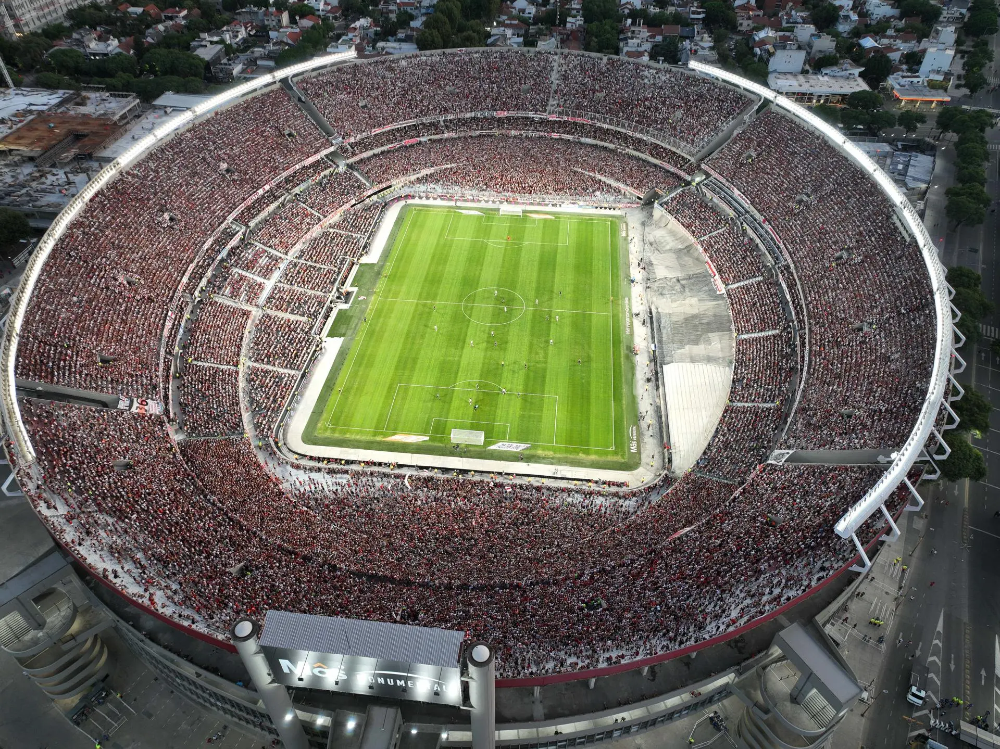

Selección Argentina

Sitio oficial de la Selección Argentina. Encontrá toda la información sobre la Selección, sus títulos, jugadores y próximos partidos.
La Selección Argentina
La Selección Argentina es una de las selecciones más importantes del fútbol mundial. A lo largo de su historia consiguió muchos títulos y tuvo grandes jugadores.
La camiseta argentina es reconocida por sus colores celeste y blanco y es seguida por millones de personas en nuestro país y en todo el mundo.
Copas del Mundo

Argentina consiguió tres Copas del Mundo a lo largo de su historia.
- 1978 - Argentina
- 1986 - México
- 2022 - Qatar
En 1978 Argentina consiguió su primer Mundial jugando como local. En 1986 consiguió su segunda Copa con Diego Maradona como una de sus grandes figuras. En 2022 ganó nuevamente el Mundial con Lionel Messi como capitán.
Copa América
La Selección Argentina también consiguió varios títulos de la Copa América.
- Copa América 1991
- Copa América 1993
- Copa América 2021
- Copa América 2024
En 2021 Argentina volvió a ganar la Copa América después de muchos años sin conseguir un título importante. En 2024 volvió a ganar el torneo y consiguió otro título importante para la Selección.
Jugadores destacados
A lo largo de los años, muchos jugadores importantes vistieron la camiseta de la Selección.
- Lionel Messi
- Diego Maradona
- Mario Kempes
- Ángel Di María
- Emiliano Martínez
- Julián Álvarez
- Gabriel Batistuta
Lionel Messi
Lionel Messi es uno de los jugadores más importantes de la historia de la Selección Argentina.
Con Argentina consiguió la Copa América 2021, la Finalissima 2022 y la Copa del Mundo 2022. También fue capitán durante el Mundial de Qatar.
Estadio Monumental

El Estadio Monumental, actualmente llamado Más Monumental, es la cancha del Club Atlético River Plate. Está ubicado en el barrio de Núñez, en la Ciudad de Buenos Aires.
Fue inaugurado el 26 de mayo de 1938 y a lo largo de los años tuvo diferentes ampliaciones y remodelaciones. Una de las más importantes se realizó para el Mundial de 1978, cuando Argentina fue sede de la Copa del Mundo.
El Monumental es uno de los estadios más importantes de Argentina y también es utilizado por la Selección Argentina para disputar sus partidos como local.
Además de los partidos de fútbol, el estadio puede recibir diferentes eventos y cuenta con tribunas, palcos, vestuarios, sectores para la prensa y otros espacios para los espectadores.
El fútbol argentino
El fútbol es uno de los deportes más populares de Argentina. Nuestro país tiene muchos clubes históricos y una gran cantidad de hinchas.
Algunos de los clubes más conocidos son:
- River Plate
- Boca Juniors
- Independiente
- Racing Club
- San Lorenzo
- Estudiantes de La Plata
Algunos momentos importantes
- 1978 - Primera Copa del Mundo
- 1986 - Segunda Copa del Mundo
- 1993 - Copa América
- 2021 - Copa América
- 2022 - Copa del Mundo
- 2024 - Copa América
Entradas
Comprá tus entradas para los próximos partidos de la Selección Argentina y alentá al equipo en el estadio.
Comprar entradas